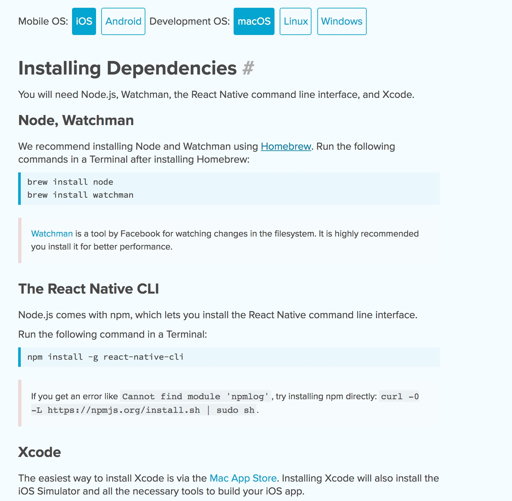
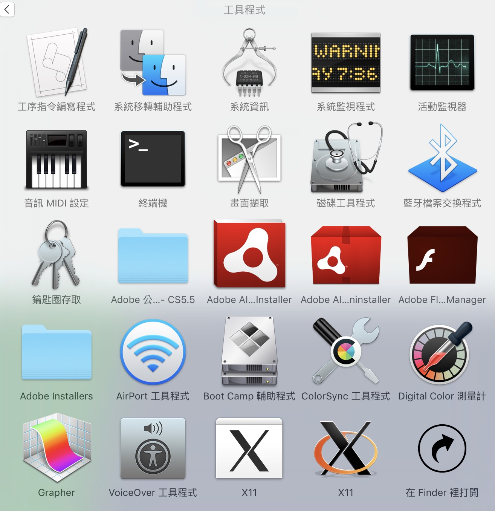
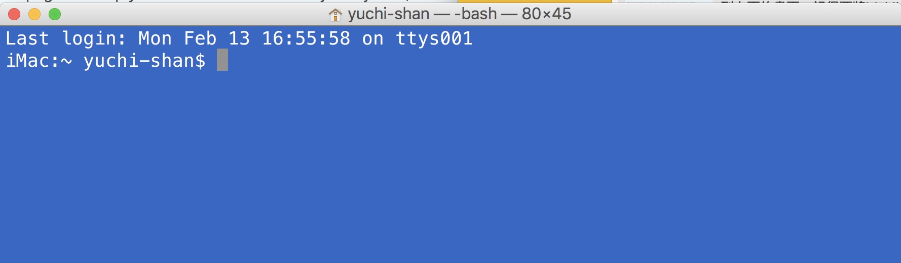
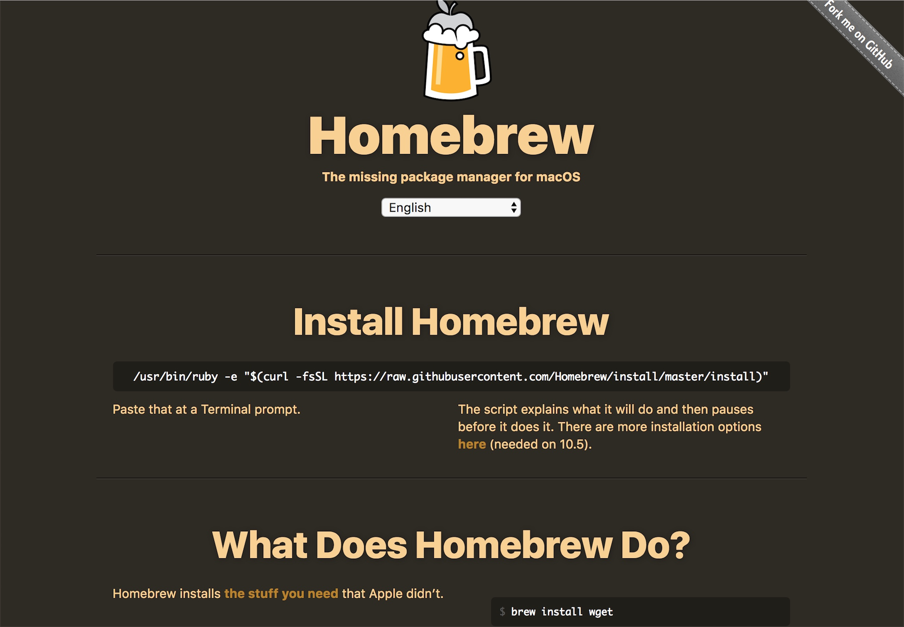
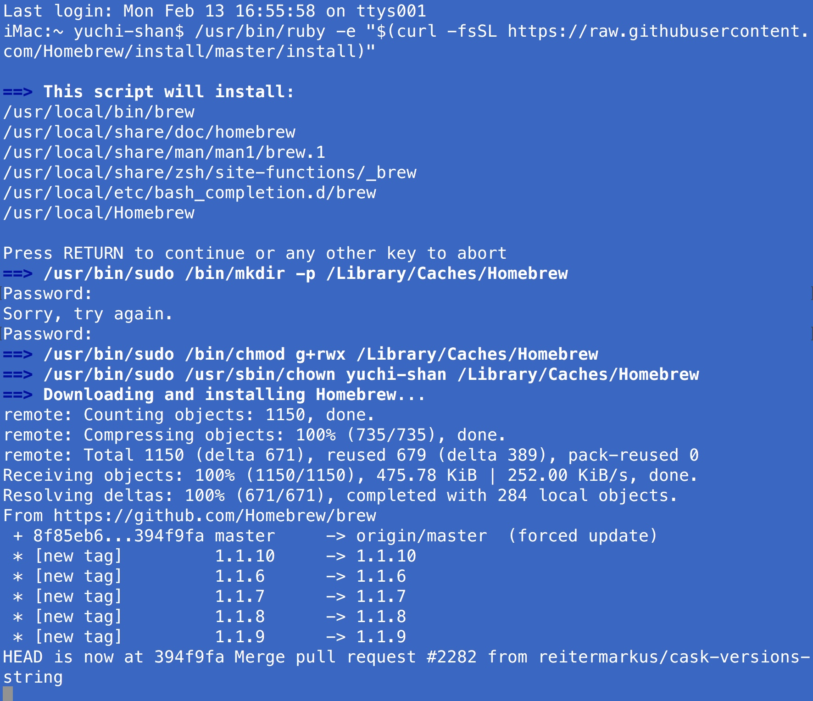
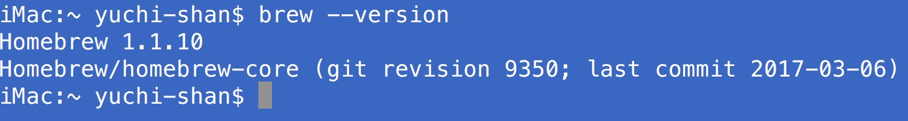
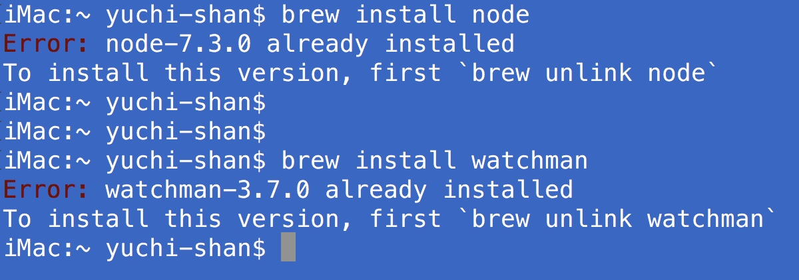
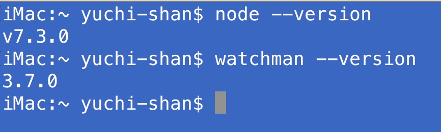
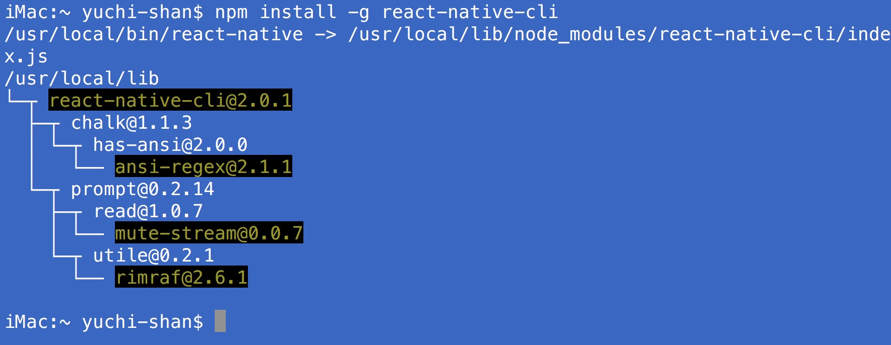
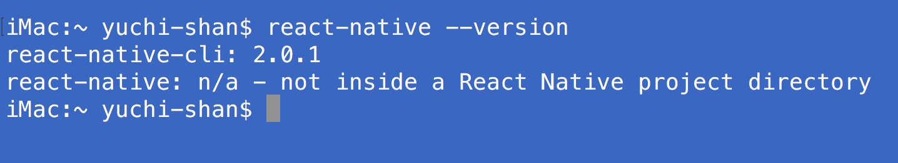

2017年3月7日 星期二 GMT+8 下午3:17
MAC的React Native開發環境建立

請連結到React Native的開發網址，你會看到上面的畫面。記得要將Mobile OS選在iOS， 將Development OS選在macOS。


所有的安裝都是在MAC的終端機底下指令，你要先安裝Homebrew。這是一個套件管理程式，我們用它來安裝node與watchman這兩個程式。其中，node要用來安裝react-native，watchman則是未來APP程式除錯的時候需要。
安裝HomeBrew

切換瀏覽器到homebrew的網址，你會看到如上的畫面。注意中間那一行指令
/usr/bin/ruby -e "$(curl -fsSL https://raw.githubusercontent.com/Homebrew/install/master/install)"
把這一行指令複製，貼到你mac終端機，會出現如下畫面，稍等一下就安裝好homebrew，在安裝的過程，可能會要你輸入你在MAC登錄的帳號密碼

安裝完，你可以在終端機輸入brew --version確定是否安裝完成，如果安裝完成，就會出現版本號碼

安裝node與watchman
接下來，就直接在終端機畫面依序輸入brew install node與brew install watchman來安裝node與watchman這兩個程式。

在以上的畫面之中，因為這兩個程式我都安裝好了，所以會出現已安裝的訊息。安裝完之後，你可以輸入node --version與watchman --version觀察是否安裝完成

安裝react-native-cli
終於到最後步驟，這次，我們要使用node裡面的一個nam指令來安裝react native，nam也是一個程式的套件管理。你只要在命令列輸入```npm install -g react-native-cli``即可完成最後的安裝，這次的作業要的就是這個截圖

安裝完，也請你用react-native --version指令確定是否安裝完成

最後
作業已經完成，但是，請你確認一下你電腦的Xcode是否是最新版本，以及，請你啟動一下Xcode，因為第一次啟動Xcode的時候，系統還會幫你安裝一些東西，這些東西我們上課的時候會用到